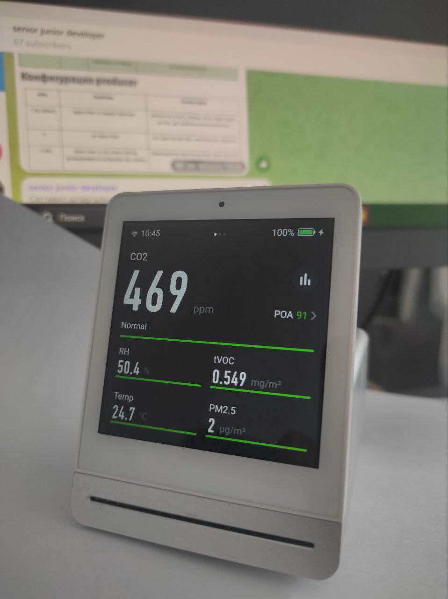

Тихий убийца вашей продуктивности

Перестань смотреть TikTok, рилсы и шортсы! Да, да, это чистая правда! 🤔
Но сегодня хотел рассказать не об этом. Вы чувствовали в помещении духоту? Не путать просто с высокой температурой. Особенно она заметна на контрасте с улицей. Обычно виновником является CO2. Углекислый газ не имеет ни цвета ни запаха, поэтому повышение его концентрации в помещении возможно отследить только по своим ощущениям (когда она будет уже высока) или с помощью специальных датчиков.
Для того, чтобы понимать качество воздуха в помещении, в котором работаю (дома на удаленке 😏), лет 5 назад я приобрел монитор качества воздуха за 8–10 т.р. Можете посмотреть подробный обзор на него здесь. Мне аппарат служит верой и правдой все это время. Кстати, уже вышла вторая версия, которую хвалят еще больше. И обзор на нее уже есть. Сейчас их великое множество и они отлично работают (даже совсем бюджетные), так что можно брать любой. Только обращайте внимание на интеграцию с умными домами и возможность настроить автоматизацию по типу открывания окна или включения кондиционера, если она вам нужна.
Итак, что же он измеряет?
- 1️⃣ концентрацию CO2 в ppm (parts per million)
- 2️⃣ концентрацию частиц PM2.5 (меньше 2,5 мкм). Они могут проходить через наши защитные барьеры, поэтому так опасны. Вы перестанете встряхивать постельное белье, увидев, как растет этот показатель
- 3️⃣ tVOC (летучие органические соединения), которые могут испускать, например, фанера и мебель, краски. Если уровень в вашем помещении стабильно высокий, то вам стоит поискать его причину
- 4️⃣ ну и, конечно, температуру и влажность
Какие уровни ppm для CO2 приемлемы?
- < 800 ppm наслаждаемся жизнью 🔝
- 800 ppm — 2000 ppm появляется усталость, потеря сосредоточенности, неприятное ощущение духоты
- 2000 ppm — 5000 ppm головная боль, сонливость, хочется покинуть помещение
- > 5000 ppm бегите, глупцы! ⚰️
Ок, концентрацию CO2 (и других частиц) в воздухе измерили. И что дальше? Лучший способ снизить уровень CO2 в помещении — это разбавлять его воздухом с улицы. Вентиляция помещения — это ключ к успеху.
Летом, если воздух снаружи чистый, то можно просто открыть окно. Если воздух грязный, то его нужно фильтровать (умеют, например, бризеры). Зимой воздух с улицы надо еще и подогревать (те же бризеры), либо подавать в малых объемах (клапаны на пластиковые окна с фильтрами). В идеале каждое помещение в доме/квартире должно быть подключено к HVAC-системе (Heating, Ventilation, and Air Conditioning), которую, вы, вероятно, видели в отелях.
Еще хочу отметить 2 факта!
Подавляющее большинство кондиционеров не освежает воздух, а только охлаждает его, так как воздух из помещения ходит по замкнутому контуру до внешнего блока и обратно.
Домашние воздухоочистители не поглощают углекислый газ, а лишь отфильтровывают загрязняющие частицы.
Дышите полной грудью!
← Назад к списку статей